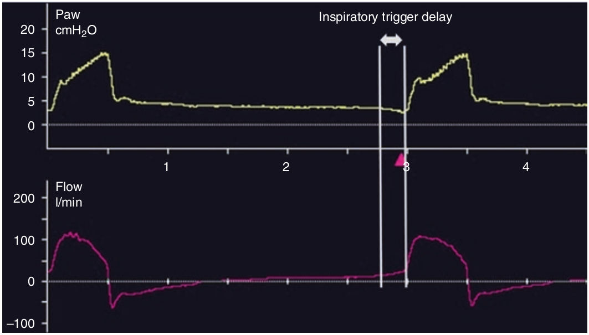

افت فشار راه هوائی در پایان بازدم نشان دهنده شروع تلاش دمی بیمار است. شدت جریان نیز بصورت همزمان فقط در ترایگر شدت جریانی (و نه ترایگر فشاری) افزایش می یابد. با شروع هواگیری ریه (پس از ترایگر)، منحنی فشار و شدت جریان بسرعت افزایش می یابند. چنانچه فاصله زمانی شروع تلاش دمی بیمار و شروع شدت جریان دمی بیش از ۲۰۰ میلی ثانیه باشد می گوئیم تاخیر در ترایگر دمی وجود دارد که معمولا در این موارد روی میدهد: کم بودن میل تنفس (درایو کم) بیمار، اتساع مفرط دینامیک، وجود نشت تصادفی

کدام مورد زیر سبب تاخیر در ترایگر دمی نمی شود؟
۱ - اتساع مفرط دینامیک
۲ - وقتی که ترایگر دمی به اندازه کافی حساس نباشد(آستانه ترایگر بالا)
۳ - زمان صعود (rise time) آهسته
۴ - میل تنفسی (درایو) کم
۵ - نشت تصادفی